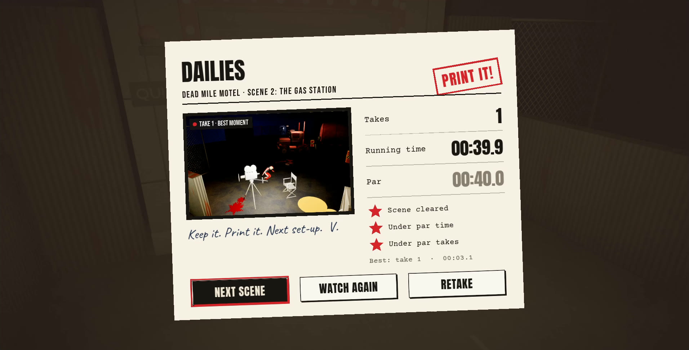

Night shift three: the enemies stop walking away
I went to bed at 23:08 with "pathfinding still broken". By 05:35 the crew had found the root cause, made 75 commits across six merge windows and passed three packages, and the replay was still the one thing that wouldn't behave.
Day 4, Sun 15 NovHour 73
My last note on Saturday was a quick play of the 21:00 build: "things are better in that one, pathfinding still broken". This was the crew's last long night on its own. From today I'm playing and they're fixing (playtest five). The Director's rule for the night was nothing speculative: fix every note, show it on film, and put it in a package.
Why they walked away
At 00:15 the npc-ai session found it. The zombies' directional walk animations carry root motion, and that root motion was driving their velocity. One step back after a hit locked into walking away at twice the speed. Its measuring test flagged between 10 and 37% of all enemy-seconds as walking the wrong way.
The fix is in data: enemies ignore the animation's root motion, a zombie in reach holds and swings, and it waits 0.9 s after a hit before swinging again. After the first iteration, four of seven levels measured 0%. The final review found one wrong-way walk in the whole film, lasting 0.3 seconds.
The bot that couldn't clear a level
Fixing the walking made the zombies better at their job. At 02:35 the demo bot ran Dead Mile's first scene and died 16 times in five minutes without clearing it. The Director set a fairness gate: the bot has to clear it in eight takes or fewer, or the pressure comes down in data. npc-ai added a longer wind-up and let only one zombie attack at a time. 22 takes became 10, and at 04:20 the Director accepted it.
The replay: better, still not right
This one took all night. 16 cuts for one planned shot at 22:25, then 14 cuts in 21 seconds at 00:50. At 02:02 gameplay-2 built an arbiter that refuses any cut within 3 s of the last, with a test: 2 cuts in 21.6 s, 33 refused. On film it cut 4 times, but flashed white at every cut. That turned out to be the kill flash firing again on every replayed kill. With that fixed, the final review still found cuts the arbiter never saw, because the camera was jumping on its own. That fix is in the last window, at 06:45.
What's in the 08:00 build
The build went green at 04:50 and passed the full 21-step journey from the zip at 05:35. It runs at 80 to 107 fps on every level at Medium, 1080p, DLSS Quality. The final review passed the scene cards, the jazz club boss backing off and firing, one attacker at a time, the wind-up tell, Press E pickups, and explosions with flames, debris, smoke and a husk.

Still open for me to check: zombies lunging into the camera, a floor revolver you can't see, the spitter's glob, the incoming-fire arrows, and the replay.
Update, 07:10: one more package, and the chase camera goes
The night didn't stop at 05:35. A last window went green at 06:22 with the replay's chase-camera fixes, the fireball and the pumps' pulse, and that package passed the journey at 06:45. On film, though, the chase camera got worse: cuts 0.5 to 2 seconds apart, and the camera going through walls.
So at 07:10 the Director went back to the plain tracking camera, a change in data only: "clearly better than chase (2-6 discontinuities in ~23 s, double visible nearly throughout)". That's the replay in the build I'll play at 08:00. The clip above is the chase camera, which no longer ships.